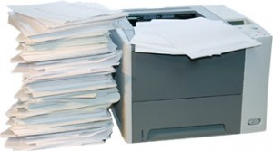

Es grünt so grün……wenn Drucker nicht mehr glüh’n!
Machen Sie mit: endlich Papier sparen
Papier sparen ist gar nicht so schwer aber dringend nötig. „SAVE paper, save ink, save money, save the planet“ eine wunderbare Devise! Es gibt viele Gründe für ein papierloses Büro. In den folgenden Wochen werde ich jede Woche ein Argument für eine papierloses Büro näher beleuchten. Zu den wichtigsten Argumenten für ein papierloses Büro zählt das Thema Umweltschutz, Nachhaltigkeit. In diesem Zusammenhang gelten drei einfache Grundsätze: Reduce, Re-use, Recycle!
Oberstes Gebot kann nur die Verringerung des Papierbedarfs sein. Es gibt immer noch viele Menschen, die auf Ihre Druckgewohnheiten angesprochen, antworten, ihr Druckverhaltens ei umweltschonend, weil sie recyceltes Papier zu nutzen. Es ist Augenwischerei, auszudrucken wie bisher, aber Ökopapier zu verwenden. Außerdem ist die Papierrecyclingindustrie selbst ein großer Umweltverschmutzer.

- Überflüssige Ausdrucke
Es ist ja allgemein bekannt, dass der Papierverbrauch seit es Computer gibt, leider nicht ab-, sondern zugenommen hat. Erstaunlich finde ich aber dennoch immer wieder, dass diese Entwicklung manchmal als Argument benutzt wird, dass das papierlose Büro ja gar nicht umzusetzen ist, weil es doch immer mehr Papier gäbe. Aber wer produziert das denn?
Zum Thema Papierverschwendung gibt es viele erschreckende Zahlen:
Darauf gibt es natürlich nur eine richtige Antwort: konsequente Papierreduktion!
Vielen Menschen fällt das aber gar nicht leicht. Es ist in der Tat eine Sache der Übung und langsamer Änderung unserer Arbeitsgewohnheiten. Es geht dabei nicht darum, nicht in Ausnahmefällen mal ein besonders wichtiges Dokument nicht auszudrucken. Sondern es geht darum, die unzähligen oft gedankenlosen Ausdrucke zu vermeiden.
Die eigenen Ausdruckgewohnheiten zu ändern ist der erste Schritt. Versuchen Sie es in kleinen Schritten. Nehmen Sie sich vor, heute mal gar nichts zu drucken, oder mal eine Woche. Oder Sie „rationieren“ Ihr Papier.
Aber zur Reduktion gehört es auch, sich weniger Papier „in’s Haus zu holen“. Das heißt, sich nicht jeden Katalog bestellen, überall immer Flyer und Broschüren mitzunehmen und auch einmal kritisch die eigenen Zeitschriften-Abos zu betrachten. Wer schafft es schon, mal abgesehen von wichtigen Fachzeitschriften, alles was abonniert ist zu lesen? Abgesehen davon sorgen die Stapel Ungelesenes für ein schlechtes Gewissen und müssen früher oder später weggeräumt oder entsorgt werden.
Wäre es nicht sinnvoller, auch im Sinne des persönlichen Wohlfühlfaktors, die entsprechende Zeitschrift mit Muße nur dann zu kaufen, wenn man weiß, dass man heute, oder dieses Wochenende Zeit dafür findet? Außerdem ist so ein Exemplar hin und wieder auch noch wesentlich günstiger, als ein Abonnement, von dessen Ausgaben die Hälfte ohnehin ungelesen bleibt.
Weitere Artikel

Digitale Tools für Zusammenarbeit im Office
E-Mail, Digitale Ablage und eine Branchensoftware sind schon lange nicht mehr genug für effiziente Zusammenarbeit. Doch bevor Sie sich in einem Dschungel an digitalen Werkzeugen verlieren, sollten Sie sich über die Systematik …

Veränderung braucht Gewohnheit
Sowohl im Berufs-als auch im Privatleben sind wir ständig im Veränderungsmodus. Manche Veränderungen wollen wir umsetzen, manche müssen wir mitmachen. Wir alles wissen, dass Veränderung nie leicht sind und je länger wir etwas auf …